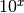
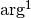
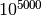
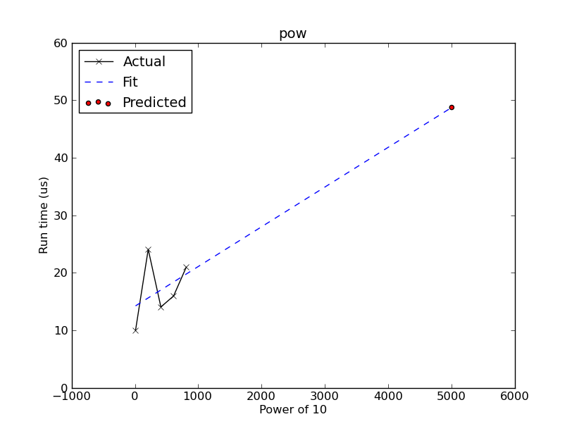
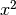
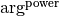

RunTimePredictor¶
-
class
astropy.utils.timer.RunTimePredictor(func, *args, **kwargs) [edit on github][source]¶ Bases:
objectClass to predict run time.
Note
Only predict for single varying numeric input parameter.
Parameters: func : function
Function to time.
args : tuple
Fixed positional argument(s) for the function.
kwargs : dict
Fixed keyword argument(s) for the function.
Examples
>>> from astropy.utils.timer import RunTimePredictor
Set up a predictor for :
>>> p = RunTimePredictor(pow, 10)
Give it baseline data to use for prediction and get the function output values:
>>> p.time_func(range(10, 1000, 200)) >>> for input, result in sorted(p.results.items()): ... print("pow(10, {0})\n{1}".format(input, result)) pow(10, 10) 10000000000 pow(10, 210) 10000000000... pow(10, 410) 10000000000... pow(10, 610) 10000000000... pow(10, 810) 10000000000...
Fit a straight line assuming  relationship (coefficients are returned):
>>> p.do_fit() array([1.16777420e-05, 1.00135803e-08])
Predict run time for :
>>> p.predict_time(5000) 6.174564361572262e-05
Plot the prediction:
>>> p.plot(xlabeltext='Power of 10')
When the changing argument is not the last, e.g., , something like this might work:
>>> p = RunTimePredictor(lambda x: pow(x, 2)) >>> p.time_func([2, 3, 5]) >>> sorted(p.results.items()) [(2, 4), (3, 9), (5, 25)]
Attributes Summary
resultsFunction outputs from time_func.Methods Summary
do_fit([model, fitter, power, min_datapoints])Fit a function to the lists of arguments and their respective run time in the cache. plot([xscale, yscale, xlabeltext, save_as])Plot prediction. predict_time(arg)Predict run time for given argument. time_func(arglist)Time the partial function for a list of single args and store run time in a cache. Attributes Documentation
-
results¶ Function outputs from
time_func.A dictionary mapping input arguments (fixed arguments are not included) to their respective output values.
Methods Documentation
-
do_fit(model=None, fitter=None, power=1, min_datapoints=3) [edit on github][source]¶ Fit a function to the lists of arguments and their respective run time in the cache.
By default, this does a linear least-square fitting to a straight line on run time w.r.t. argument values raised to the given power, and returns the optimal intercept and slope.
Parameters: model :
astropy.modeling.ModelModel for the expected trend of run time (Y-axis) w.r.t.  (X-axis). If
None, will usePolynomial1Dwithdegree=1.fitter :
astropy.modeling.fitting.FitterFitter for the given model to extract optimal coefficient values. If
None, will useLinearLSQFitter.power : int, optional
Power of values to fit.
min_datapoints : int, optional
Minimum number of data points required for fitting. They can be built up with
time_func.Returns: a : array-like
Fitted
FittableModelparameters.Raises: AssertionError
Insufficient data points for fitting.
ModelsError
Invalid model or fitter.
-
plot(xscale='linear', yscale='linear', xlabeltext='args', save_as='') [edit on github][source]¶ Plot prediction.
Note
Uses matplotlib.
Parameters: xscale, yscale : {‘linear’, ‘log’, ‘symlog’}
Scaling for
matplotlib.axes.Axes.xlabeltext : str, optional
Text for X-label.
save_as : str, optional
Save plot as given filename.
Raises: AssertionError
Insufficient data for plotting.
-
predict_time(arg) [edit on github][source]¶ Predict run time for given argument. If prediction is already cached, cached value is returned.
Parameters: arg : number
Input argument to predict run time for.
Returns: t_est : float
Estimated run time for given argument.
Raises: AssertionError
No fitted data for prediction.
-
time_func(arglist) [edit on github][source]¶ Time the partial function for a list of single args and store run time in a cache. This forms a baseline for the prediction.
This also stores function outputs in
results.Parameters: arglist : list of numbers
List of input arguments to time.
-
{kind=link}